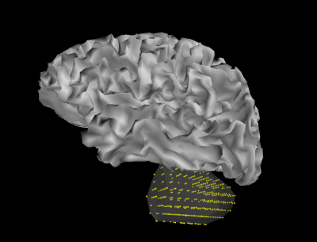

Generate a volume source space of the left cerebellum and plot its vertices relative to the left cortical surface source space and the freesurfer segmentation file.
Python source code: plot_left_cerebellum_volume_source.py
# Author: Alan Leggitt <alan.leggitt@ucsf.edu>
#
# License: BSD (3-clause)
import numpy as np
from scipy.spatial import ConvexHull
from mayavi import mlab
from mne import setup_source_space, setup_volume_source_space
from mne.datasets import sample
print(__doc__)
data_path = sample.data_path()
subjects_dir = data_path + '/subjects'
subj = 'sample'
aseg_fname = subjects_dir + '/sample/mri/aseg.mgz'
###############################################################################
# Setup the source spaces
# setup a cortical surface source space and extract left hemisphere
surf = setup_source_space(subj, subjects_dir=subjects_dir,
add_dist=False, overwrite=True)
lh_surf = surf[0]
# setup a volume source space of the left cerebellum cortex
volume_label = 'Left-Cerebellum-Cortex'
sphere = (0, 0, 0, 120)
lh_cereb = setup_volume_source_space(subj, mri=aseg_fname, sphere=sphere,
volume_label=volume_label,
subjects_dir=subjects_dir)
###############################################################################
# Plot the positions of each source space
# extract left cortical surface vertices, triangle faces, and surface normals
x1, y1, z1 = lh_surf['rr'].T
faces = lh_surf['use_tris']
normals = lh_surf['nn']
# normalize for mayavi
normals /= np.sum(normals * normals, axis=1)[:, np.newaxis]
# extract left cerebellum cortex source positions
x2, y2, z2 = lh_cereb[0]['rr'][lh_cereb[0]['inuse'].astype(bool)].T
# open a 3d figure in mayavi
mlab.figure(1, bgcolor=(0, 0, 0))
# plot the left cortical surface
mesh = mlab.pipeline.triangular_mesh_source(x1, y1, z1, faces)
mesh.data.point_data.normals = normals
mlab.pipeline.surface(mesh, color=3 * (0.7,))
# plot the convex hull bounding the left cerebellum
hull = ConvexHull(np.c_[x2, y2, z2])
mlab.triangular_mesh(x2, y2, z2, hull.simplices, color=3 * (0.5,), opacity=0.3)
# plot the left cerebellum sources
mlab.points3d(x2, y2, z2, color=(1, 1, 0), scale_factor=0.001)
# adjust view parameters
mlab.view(173.78, 101.75, 0.30, np.array([-0.03, -0.01, 0.03]))
mlab.roll(85)
##############################################################################
# Compare volume source locations to segmentation file in freeview
# Export source positions to nift file
nii_fname = data_path + '/MEG/sample/mne_sample_lh-cerebellum-cortex.nii'
# Combine the source spaces
src = surf + lh_cereb
src.export_volume(nii_fname, mri_resolution=True)
# Uncomment the following lines to display source positions in freeview.
'''
# display image in freeview
from mne.utils import run_subprocess
mri_fname = subjects_dir + '/sample/mri/brain.mgz'
run_subprocess(['freeview', '-v', mri_fname, '-v',
'%s:colormap=lut:opacity=0.5' % aseg_fname, '-v',
'%s:colormap=jet:colorscale=0,2' % nii_fname, '-slice',
'157 75 105'])
'''
Total running time of the example: 34 seconds